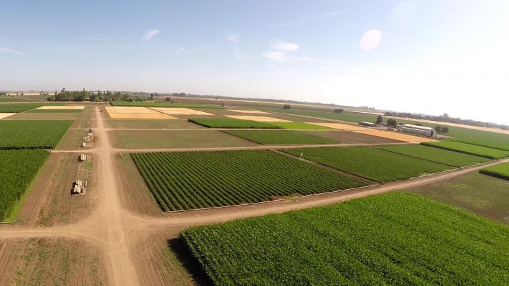
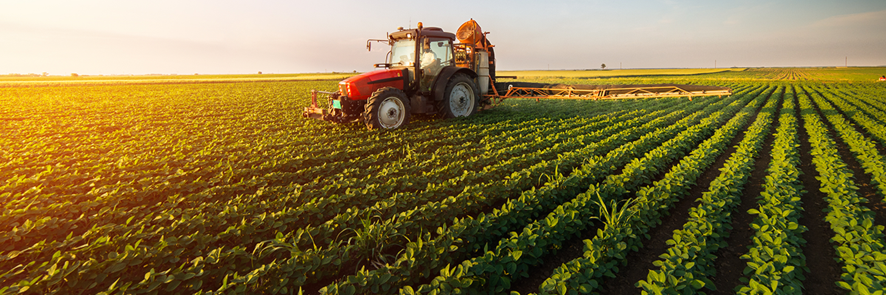

يدرك الرئيس عبد الفتاح السيسى جيداً أن بناء الانسان هو الأساس فى أى عملية تنمية حقيقية، لذا كان لزاما أن يتم إعادة تأهيل الريف المصرى بكل المحافظات تأهيلا شاملاً فى مختلف المجالات والقطاعات، ولهذا دعا الرئيس السيسى فى 2 يناير 2019 مؤسسات وأجهزة الدولة لتوحيد الجهود لإطلاق مبادرة وطنية على مستوى الدولة بتوفير حياة كريمة للفئات المجتمعية الأكثر احتياجًا والمساهمة فى تحسين مستوى الخدمات اليومية المقدمة للمواطنين فى القرى.
وتهدف المبادرة إلى توفير الحياة الكريمة للفئات الأكثر احتياجًا على مستوى الجمهورية، كما تتضمن شقًّا للرعاية الصحية وتقديم الخدمات الطبية والعمليات الجراحية، وصرف أجهزة تعويضية، فضلًا عن تنمية القرى الأكثر احتياجًا وفقًا لخريطة الفقر، وتوفير فرص عمل بالمشروعات الصغيرة والمتوسطة فى القرى والمناطق الأكثر احتياجًا، وتجهيز الفتيات اليتيمات للزواج.

مسئولية إنسانية
هى مبادرة متعددة فى أركانِها ومتكاملة فى ملامِحِها، وتنبُع هذه المبادرة من مسئولية حضارية وبُعد إنسانى قبل أى شيء آخر، فهى أبعدُ من كونها مبادرة تهدفُ إلى تحسين ظروف المعيشة والحياة اليومية للمواطن المصري، لأنها تهدف أيضا إلى التدخل العاجل لتكريم الإنسان المصرى وحفظ كرامته وحقه فى العيش الكريم، ذلك المواطن الذى تحمل فاتورة الإصلاح الاقتصادى والذى كان خير مساند للدولة المصرية فى معركتها نحو البناء والتنمية، حيث كان المواطن المصرى هو البطل الحقيقى الذى تحمل كافة الظروف والمراحل الصعبة بكل تجرد وإخلاص وحب للوطن.
ومن هنا، كان لِزاما أن يتم التحرك على نطاق واسع ولأولِ مرة فى أى دولة على مستوى العالم وفى إطار من التكامل وتوحيد الجهود بين مؤسسات الدولة الوطنية ومؤسسات القطاع الخاص والمجتمع المدنى وشركاء التنمية فى مصر، لأن ما تسعى هذه المبادرة إلى تقديمه من حزمة متكاملة من الخدمات، التى تشملُ جوانبَ مختلفة صحية واجتماعية ومعيشية، هى بمثابةِ مسئولية ضخمة ستتشاركُ هذه الجهات المختلفة فى شرفِ والتزامِ تقديمها إلى المواطن المصري، لا سيما من الفئات المجتمعية الأكثر احتياجًا للمساعدة ولمد يدِ العَونِ لها، حتى تستطيع أن تحيا الحيَاة الأفضل التى تستحقُّها والتى تضمن لها الحياة الكريمة.
من هنا جاء دور مبادرة حياة كريمة أحد أهم وأبرز المبادرات الرئاسية لتوحيد كافة جهود الدولة والمجتمع المدنى والقطاع الخاص لهدف التصدى للفقر متعدد الأبعاد وتوفير حياة كريمة بها تنمية مستدامة للفئة الأكثر احتياجا فى محافظات مصر ولسد الفجوات التنموية بين المراكز والقرى وتوابعها والاستثمار فى تنمية الانسان وتعزيز قيمة الشخصية المصرية.
بداية الفكرة
نشأت فكرة المبادرة عندما شارك الشباب المتطوع بعرض رؤيتهم وأفكارهم فى المؤتمر الأول لمبادرة «حياة كريمة»، والذى عقُد على هامش المؤتمر الوطنى السابع للشباب فى 30 يوليو 2019، وعلى إثره تم إنشاء مؤسسة حياة كريمة بتاريخ 22 أكتوبر 2019 من شباب متطوع يقدم نموذجا فريدا يحتذى به فى العمل التطوعي.
new.html
وتهدف المؤسسة إلى التدخل الإنسانى لتنمية وتكريم الانسان المصرى وحفظ كرامته وحقه فى العيش الكريم لإحداث تغيير ملموس لتكريس كافة مجهودات العمل الخيرى والتنموي، فلأول مرة على مستوى العمل العام، تجتمع أكثر من ٢٠ وزارة وهيئة و٢٣ منظمة مجتمع مدنى لتنفيذ هذا المشروع الأهم على الإطلاق وبسواعد الشباب المصرى المتطوع للعمل الخيرى والتنموى من خلال مؤسسة حياة كريمة ليكونوا نبراسًا يحتذى به فى مجال العمل التطوعي.
أهداف أساسية
ومنذ اليوم الأول لإطلاق المبادرة كان هناك عدد من الأهداف الأساسية التى تسعى الدولة إلى تحقيقها ومن بينها التخفيف عن كاهل المواطنين بالتجمعات الأكثر احتياجا فى الريف والمناطق العشوائية فى الحضر، التنمية الشاملة للتجمعات الريفية الأكثر احتياجا بهدف القضاء على الفقر متعدد الأبعاد لتوفير حياة كريمة مستدامة للمواطنين على مستوى الجمهورية، الارتقاء بالمستوى الاجتماعى والاقتصادى والبيئى للأسر المستهدفة، توفير فرص عمل لتدعيم استقلالية المواطنين وتحفيزهم للنهوض بمستوى المعيشة لأسرهم وتجمعاتهم المحلية، إشعار المجتمع المحلى بفارق إيجابى فى مستوى معيشتهم، تنظيم صفوف المجتمع المدنى وتدعيم الثقة فى كافة مؤسسات الدولة، الاستثمار فى تنمية الانسان المصري، سد الفجوات التنموية بين المراكز والقرى وتوابعها، وإحياء قيم المسئولية المشتركة بين كافة الجهات الشريكة لتوحيد التدخلات التنموية فى المراكز والقرى وتوابعها.
كما سعت المبادرة إلى تحقيق عدد من المرتكزات من بينها تضافر جهود الدولة مع خبرة مؤسسات المجتمع المدنى ودعم المجتمعات المحلية فى إحداث التحسن النوعى فى معيشة المواطنين المستهدفين ومجتمعاتهم على حد السواء، فضلا عن أهمية تعزيز الحماية الاجتماعية لجميع المواطنين، توزيع مكاسب التنمية بشكل عادل، وتوفير فرص عمل لتدعيم استقلالية المواطنين وتحفيزهم للنهوض بمستوى المعيشة لأسرهم ولمجتمعاتهم المحلية.

مبادئ المبادرة
قامت المبادرة على عدد من المبادئ الأساسية هى الشفافية فى تداول المعلومات، تعزيز الحماية الاجتماعية للفئات الأكثر احتياجا، الالتزام والتعهد لكل شريك للقيام بدوره وفق منهجية العمل ومعايير الخدمات، دعم اللامركزية عن طريق تفويض السلطة وإتاحة قدر أكبر من المرونة وتقريب المسافة بين مستويات اتخاذ القرار، النزاهة فى أداء الخدمة لمستحقيها، الثقة المتبادلة بين كافة الجهات الشريكة والشباب المتطوع للعمل، والتوازن بين تقديم التدخلات الخدمية والتدخلات التنموية والإنتاجية.
وتوجهت المبادرة بخدماتها إلى مختلف فئات المجتمع لكن كان هناك عدد من الفئات الأكثر حصولا عليها الاهتمام من المبادرة وهم الأسر الأكثر احتياجا فى التجمعات الريفية، كبار السن، ذوى الهمم، المتطوعين، النساء المعيلات والمطلقات، الأيتام والأطفال، والشباب القادر على العمل.
محاور العمل
لضمان نجاح المبادرة فى تحقيق أهدافها تم وضع عدد من محاور العمل وهى سكن كريم والمتمثل فى رفع كفاءة منازل، بناء أسقف، وبناء مجمعات سكنية فى القرى الأكثر احتياجًا، ومد وصلات مياه وصرف صحى وغاز وكهرباء داخل المنازل، تدعيم البنية التحتية للمشروعات متناهية الصغر وتفعيل دور التعاونيات الإنتاجية فى القرى، خدمات طبية تتمثل فى بناء مستشفيات ووحدات صحية وتجهيزها من معدات وتشغيلها بالكوادر الطبية وإطلاق قوافل طبية وتقديم من خلالها خدمات صحية من أجهزة تعويضية «سماعات ونظارات وكراسى متحركة وعكاز»، وكذلك خدمات تعليمية ومن بينها بناء ورفع كفاءة المدارس والحضانات وتجهيزها وتوفير الكوادر التعليمية وإنشاء فصول محو الأمية.
ثلاث مراحل
وضعت المبادرة ثلاث مراحل للعمل من أجل تحقيق نسب عالية من التنفيذ والإنجاز، حيث تشمل المرحلة الأولى من المبادرة القرى ذات نسب الفقر من 7٠ % فيما أكثر وهى القرى الأكثر احتياجًا والتى تحتاج إلى تدخلات عاجلة، أما المرحلة الثانية من المبادرة فكانت خاصة بالقرى ذات نسب الفقر من 50% إلى 70 % وهى القرى الفقيرة التى تحتاج لتدخل ولكنها أقل صعوبة من المجموعة الأولى، فيما ارتكزت المرحلة الثالثة من المبادرة على القرى ذات نسب الفقر أقل من 50% وهى التى يكون لها تحديات أقل لتجاوز الفقر.
واستهدفت المرحلة الأولى من تنفيذ المبادرة 377 قرية الأكثر احتياجًا والأكثر تعرضا للتطرف والإرهاب الفكري، والتى تتراوح نسبة الفقر فيها 70% فأكثر، بإجمالى عدد أسر 756 ألف أسرة (3 ملايين فرد) فى ١١ محافظة.. ويستهدف المشروع التدخل العاجل لتحسين جودة الحياة لمواطنى الريف المصرى من خلال تطوير ٤٥٨٤ قرية يمثلون نسبة ٥٨٪ من إجمالى سكان مصر بتكلفة تقديرية حوالى 700 مليار جنيه.